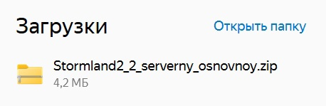
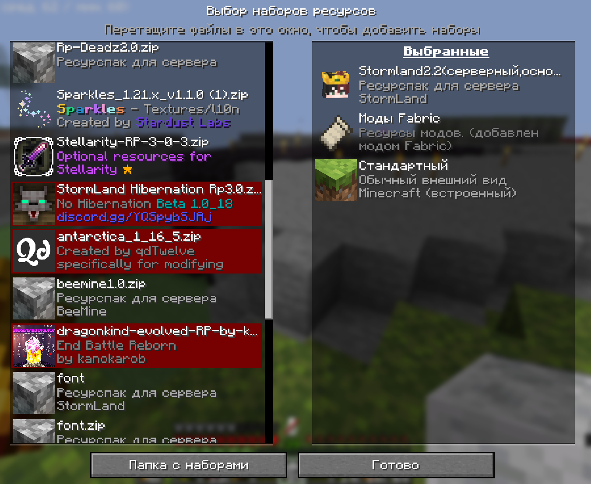
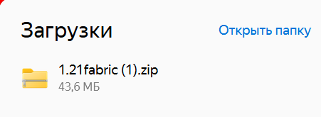
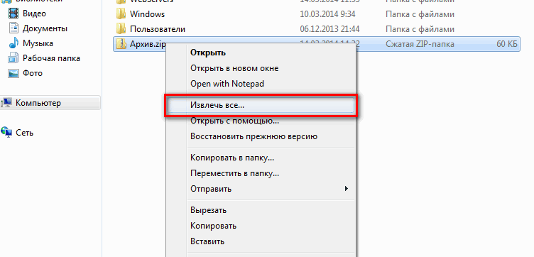
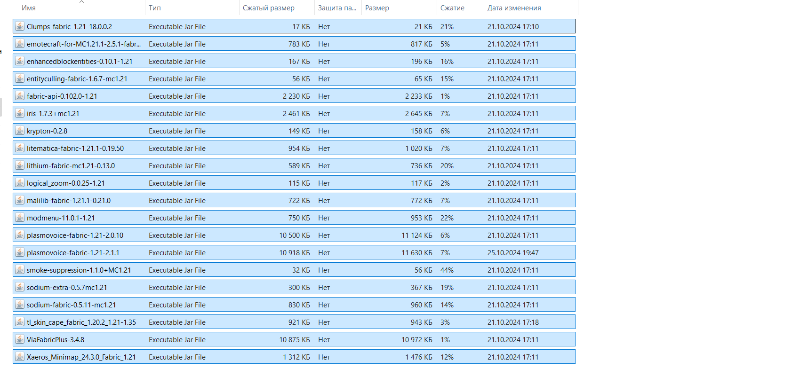

Доступные Ресурспаки
Доступные Сборки
Как установить ресурспак?
1. Скачайте файл (ResourcePack)

2. Откройте проводник, скопируйте архив.
3. Перейдите в .minecraft и вставьте архив в папку resourcepacks.
(Скопировать расширение)
4. Переместите набор ресурсов в игре, нажмите готово.

Как установить Сборку?
1. Скачайте файл (1.21 fabric)

2. Откройте проводник и разархивируете архив в загрузках.

3. Откройте разархивированную папку, и скопируйте моды из нее.

4. перейдите в .minecraft и вставьте моды.
(Скопировать расширение)
5. Запустите майнкрафт с модами на 1.21 fabic.